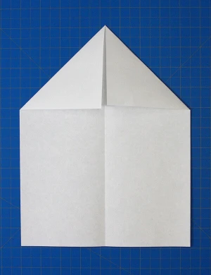
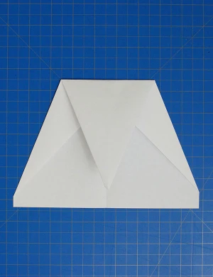
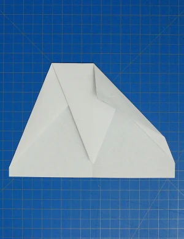
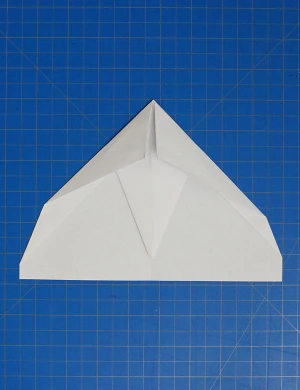

1步骤 1
Fold the sheet in half and then unfold.
Fold the sheet in half and then unfold.

Fold the top two corner to the center.

Again, fold the top two edges to the center.

Next, fold the top point down. You can fold it all the way to the bottom, or shy by a little bit. It's up to you!

Fold the top two corners to the center.

It should now look like this.